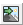

|
|
Toolbar: 
Menu: CAD-Earth > Export screen capture to Google Earth
|
|
|
Command line: CE_EXPGEIMG
Prompts:
Select screen capture window: Press [ENTER] to continue... If create tiled images options selected: Number of image rows: Number of image columns:
CAD-Earth version: Basic, Plus, Premium. |
.png)
.png)
Command description:
CAD drawings can be exported to Google Earth as image overlays. Image capture can be in full color, grayscale or B&W in major image formats (BMP, JPEG, TIFF, PNG, GIF). Background color can be completely transparent or changed to another color if desired. Screenshots can be also taken in tiles to increase final image resolution.
Dialog box settings (Image tab):

Export CAD screenshot to Google Earth (Image tab)
ØImage name and description. This information will be shown in Google Earth 'My Places' Explorer as the name and description of the corresponding image overlay node.
ØImage file.
•Save image files automatically. If you select this option image files will be saved in the CAD-Earth Images folder. A consecutive file name will then be automatically assigned to each image.
•Select where to save image files. A file selection dialog box will appear where you can set the file name and folder where the image will be saved.
•Set screenshot tiles. If this option is set, screenshots will be taken consecutively in rows. The number of image rows and columns must be entered before the screenshots are taken.
ØImage capture.
•Full color. Screenshot will be taken as seen in the CAD screen.
•Grayscale. Screen colors will be converted to equivalent shades of gray.
•Black & white. Screen colors will be converted to black and white.
•Image format. Screenshots can be saved in the following formats: BMP, JPEG, TIFF, GIF, PNG. If you intend to make the background color transparent you must select the PNG format.
•Image opacity. The overall image opacity can be set from 0% (completely invisible) to 100% (completely visible).
ØBackground color.
•Keep background color. Screenshots will be taken keeping the actual drawing screen background color.
•Change background color. The drawing screen background color will be changed to the color selected.
•Make background color transparent. The drawing screen background color will be completely transparent, so only the drawing elements will be visible.
Tips:
•Before using this command the current drawing must be georeferenced to establish the conversion parameters between the drawing and the latitude/longitude coordinates of the corresponding site.
•If you intend to share the resulting image overlay information you can save the corresponding image overlay folder to a KML or KMZ file by right clicking the corresponding node in the Google Earth 'My Places' Explorer. Then select 'Save Place As.' . This file can be opened by other users on Google Earth so they can see your image overlay. You must also include the corresponding image file so the user can update the link to the image in the Google Earth image overlay properties dialog box.
•Choose the 'Select where to save image files' option so you can easily locate the corresponding image files if you need to share them.
•If you select the 'Save file images automatically' option, image files will be saved to the 'Images' folder located in the CAD-Earth's installation directory with a consecutive name, using the image name as a prefix.
Related topics:
•Georeference drawing selecting objects
•Georeference drawing selecting two points
•Georeference drawing by selecting a coordinate system
Copyright © 2023 Arqcom Software
Google Earth© is a registered trademark of Google inc. All other trademarks are the property of their respective owners.